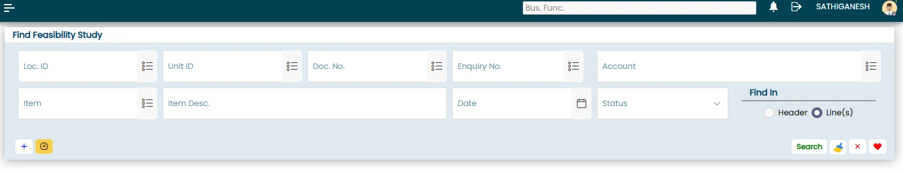
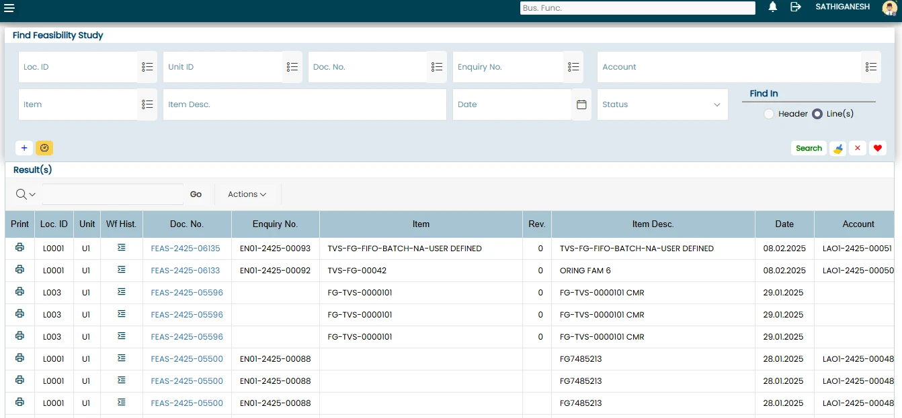
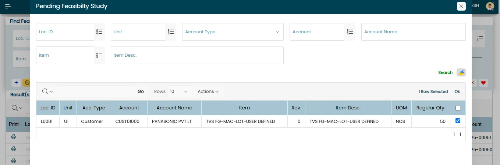
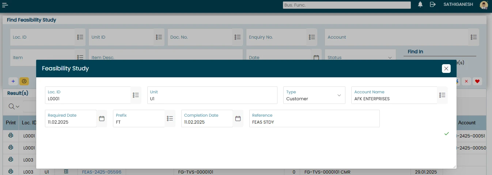
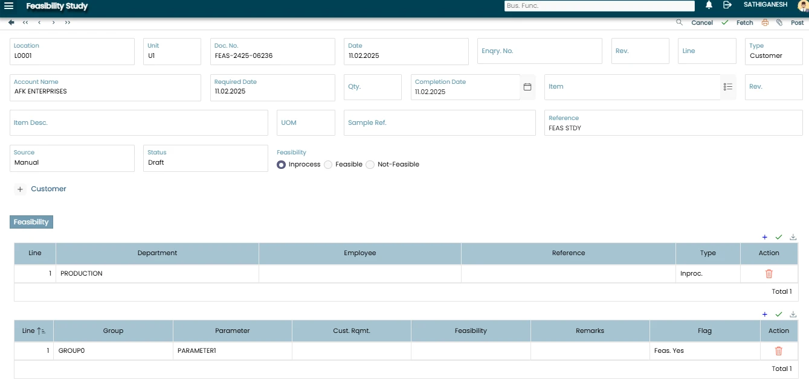

<div data-category="CRM" data-title="Feasibility Study" data-updated="December 01, 2025" data-contributors="RoadmapIT" data-breadcrumb="Home,CRM,Feasibility Study">
  <div class="page-content">
    <p>A feasibility study is an assessment of the practicality of a proposed plan or project. It aims to determine whether the project/product is likely to succeed by evaluating various factors such as costs, benefits, risks, and potential issues, In marketing Feasibility Study are configured in this screen.</p>
    <h5>Navigation path:</h5>
    <p class="fs-6">CRM \ Transaction \ Feasibility Study</p>
    
    <ul style="list-style-type: none; align-content: center">
      <li class="mouse-icon">Search screen displays the list of Feasibility study with the relevant details and its status</li>
      <li class="mouse-icon">Click on Search to filter all the records</li>
    </ul>
    
    <ul style="list-style-type: none; align-content: center">
      <li class="mouse-icon">User can filter the respective documents by entering the search parameters at the header</li>
      <li class="mouse-icon">On clicking search button, system displays the results relevant to the search parameters entered</li>
      <li class="mouse-icon">
        Using
        
        icon, entered search parameters can be cleared
      </li>
      <li class="mouse-icon">
        To close the screen, use
        <i class="bi bi-x fs-4 mx-2 text-danger"></i>
        icon
      </li>
      <li class="mouse-icon">On clicking pending Feasibility study yet to be processed is displayed as shown below</li>
    </ul>
    
    <ul style="list-style-type: none; align-content: center">
      <li class="mouse-icon">You filter with the Pending Feasibility. Field or with any of the relevant search fields in the header, pending feasibility will be displayed with the following details</li>
      <li class="mouse-icon">Location, Account, Account type and item wise filter here</li>
      <li class="mouse-icon">Select the Record</li>
      <li class="mouse-icon">Enter the prefix & Click ok button to create Feasibility</li>
    </ul>
    <p class="text-center">(Or)</p>
    <ul style="list-style-type: none; align-content: center">
      <li class="mouse-icon">
        By Clicking the
        <i class="bi bi-plus fs-4 mx-2 text-primary"></i>
        Add button we can create new Feasibility Study. The Feasibility study details given are populated to the transaction screen once executed
      </li>
    </ul>
    
    <ul style="list-style-type: none; align-content: center">
      <li class="mouse-icon">Choose the Loc ID</li>
      <li class="mouse-icon">Choose the Account from the LOV</li>
      <li class="mouse-icon">Enter the Require Date and completion Date</li>
      <li class="mouse-icon">Choose the Doc Prefix</li>
      <li class="mouse-icon">Enter the Reference</li>
      <li class="mouse-icon">
        Click on
        <i class="bi bi-check-lg fs-4 mx-1 text-success"></i>
      </li>
    </ul>
    
    <ul style="list-style-type: none; align-content: center">
      <li class="mouse-icon">Enter the Account details (Either a Customer or lead)</li>
      <li class="mouse-icon">Fetch the Department. The department involve in that production will be displayed</li>
      <li class="mouse-icon">Enter the result weather it was feasible or not feasible</li>
      <li class="mouse-icon">If it was Not-Feasible the Enquiry ends here</li>
      <li class="mouse-icon">Enter/Choose the Feasibility Group from LOV</li>
      <li class="mouse-icon">Enter/Choose the Parameter for Feasibility Group</li>
      <li class="mouse-icon">Choose the Type</li>
      <li class="mouse-icon">Click on Post button and the document can be forwarded for approval</li>
      <li class="mouse-icon">If you want cancel the record, click the cancel button</li>
    </ul>
    <div class="wp-callout wp-callout-info">
      <div class="wp-callout-title">
        <i class="bi bi-lightbulb-fill" style="font-size: 18px; color: #ffd903"></i>
        Note
      </div>
      <p>The document can be forwarded to other users to check the feasibility department wise and to update the status accordingly.</p>
    </div>
  </div>
</div>
